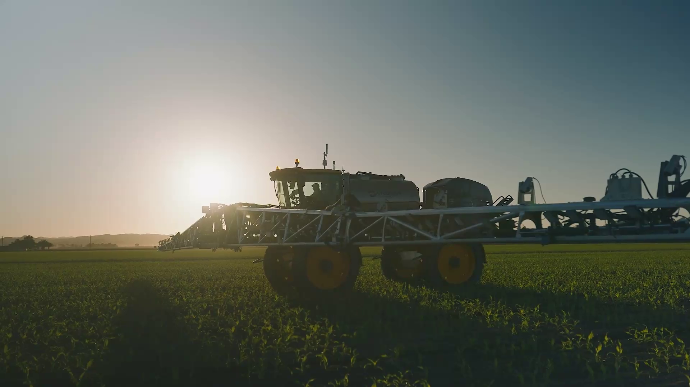

SoilScan utilizes artificial intelligence and deep learning technology to revolutionize the pest control process in agriculture, transitioning from the current practice of broadcast and wasteful spraying of pesticides to precise and selective spraying.